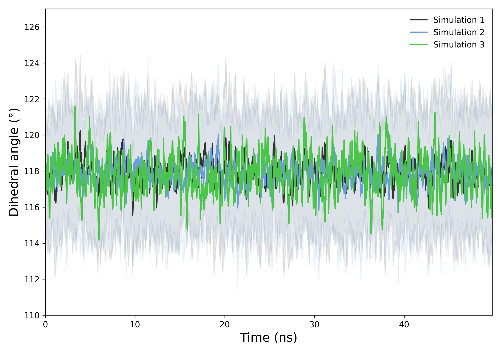
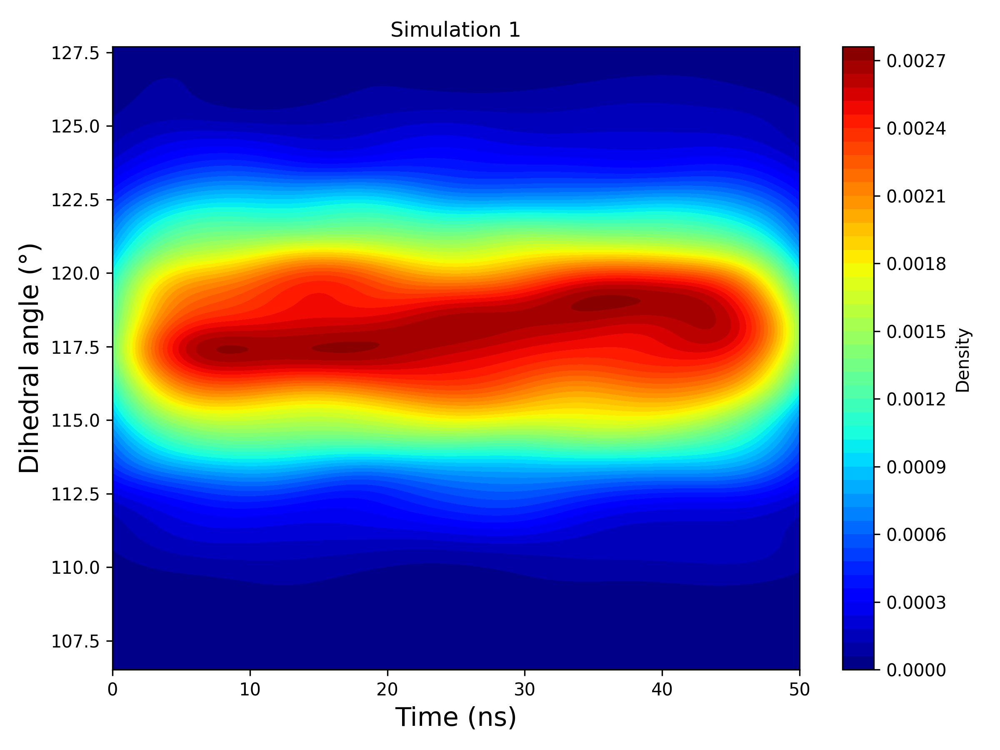
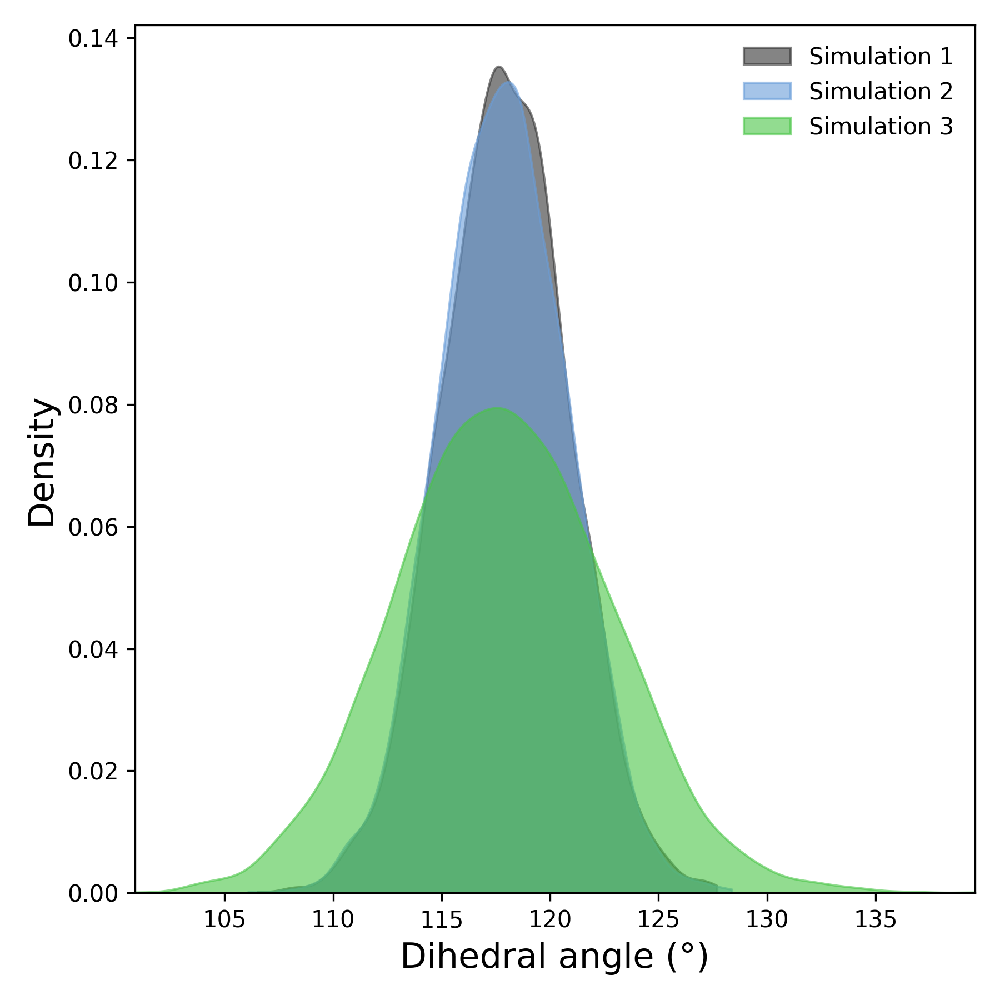

Ligand Angle
Overview
DynamiSpectra provides a comprehensive and versatile analytical framework designed to quantify and monitor the spatial distribution and dynamics of ligand angular conformations throughout molecular dynamics simulations. Utilizing input data in standardized .xvg file format, this module enables researchers to characterize ligand conformational preferences, rotational flexibility, and dynamic behavior within the simulated environment.
This analysis delivers detailed insights into the distribution and evolution of ligand angles, facilitating identification of predominant conformations, conformational transitions, or rare states. The graphical outputs generated by DynamiSpectra support clear visualization of ligand angular patterns over time, enabling both qualitative and quantitative interpretation of ligand structural dynamics.
Command line in GROMACS to generate .xvg files for the analysis:
gmx angle -f Simulation.xtc -n Simulation.ndx -type dihedral -od diedro_ligand.xvg
Note: The .ndx file must include a group containing the specific atoms that define the dihedral angle of interest for the ligand. Proper selection of these atoms is essential for accurate calculation and analysis of ligand dihedral angles.
def angle_ligand_analysis(output_folder, *simulation_groups, time_config=None, density_config=None, kde2d_config=None)

Interpretation guidance: This plot shows the temporal evolution of the ligand’s dihedral angle across simulations. The consistent range and overlapping curves suggest similar torsional behavior. Fluctuations indicate dynamic flexibility within the sampled timescale.

Interpretation guidance: This 2D KDE plot represents the temporal evolution of the ligand’s dihedral angle, computed as the circular mean across all replicas within each simulation group. If a simulation includes six replicas, their angular profiles are combined through circular averaging to generate a single, smoothed density map. The result reveals dominant conformational states and transitions over time, highlighting regions of stability and fluctuation.
{kind=link}

Interpretation guidance: The density plot compares the overall distribution of dihedral angles across simulations. A narrow peak suggests rigidity, while broader or multiple peaks indicate flexible or metastable conformations. Differences between curves reflect variability across replicates.
Complete code
import numpy as np
import matplotlib.pyplot as plt
from scipy.stats import gaussian_kde
import os
def read_angle(file):
try:
print(f"Reading file: {file}")
times, angles = [], []
with open(file, 'r') as f:
for line in f:
if line.startswith(('#', '@', ';')) or line.strip() == '':
continue
try:
time_ps, angle = map(float, line.split()[:2])
times.append(time_ps * 0.001) # convert ps to ns
angles.append(angle)
except ValueError:
print(f"Skipping invalid line: {line.strip()}")
if not times or not angles:
raise ValueError(f"No valid data in file: {file}")
return np.array(times), np.array(angles)
except Exception as e:
print(f"Error reading file {file}: {e}")
return None, None
def check_simulation_times(*time_arrays):
for i in range(1, len(time_arrays)):
if not np.allclose(time_arrays[0], time_arrays[i]):
raise ValueError(f"Simulation times do not match between file 1 and file {i+1}")
def downsample(data, step=10):
return data[::step]
def moving_average(data, window_size=20):
return np.convolve(data, np.ones(window_size)/window_size, mode='valid')
def plot_time_series(results, output_folder, config):
plt.figure(figsize=config.get('figsize', (8, 5)))
colors = config.get('colors', ['#1f77b4', '#ff7f0e', '#2ca02c'])
alpha = config.get('alpha', 0.2)
labels = config.get('labels', [f"Simulation {i+1}" for i in range(len(results))])
fontsize = config.get('label_fontsize', 12)
step = config.get('downsample_step', 10)
smooth_window = config.get('smooth_window', 20)
for i, (time, mean, std) in enumerate(results):
time_ds = downsample(time, step)
mean_ds = downsample(mean, step)
std_ds = downsample(std, step)
mean_smooth = moving_average(mean_ds, smooth_window)
std_smooth = moving_average(std_ds, smooth_window)
time_smooth = time_ds[:len(mean_smooth)]
plt.plot(time_smooth, mean_smooth, label=labels[i], color=colors[i % len(colors)])
plt.fill_between(time_smooth, mean_smooth - std_smooth, mean_smooth + std_smooth,
color=colors[i % len(colors)], alpha=alpha)
plt.xlim(time_smooth[0], time_smooth[-1])
ymin = min([np.min(mean - std) for _, mean, std in results])
ymax = max([np.max(mean + std) for _, mean, std in results])
plt.ylim(ymin, ymax)
plt.xlabel(config.get('xlabel', 'Time (ns)'), fontsize=fontsize)
plt.ylabel(config.get('ylabel', 'Dihedral angle (°)'), fontsize=fontsize)
plt.legend(frameon=False, fontsize=10)
plt.tick_params(axis='both', which='major', labelsize=10)
plt.tight_layout()
os.makedirs(output_folder, exist_ok=True)
plt.savefig(os.path.join(output_folder, 'angle_over_time.png'), dpi=300)
plt.savefig(os.path.join(output_folder, 'angle_over_time.tiff'), dpi=300)
plt.show()
def plot_density(distributions, output_folder, config):
plt.figure(figsize=config.get('figsize', (6, 5)))
colors = config.get('colors', ['#1f77b4', '#ff7f0e', '#2ca02c'])
alpha = config.get('alpha', 0.4)
labels = config.get('labels', [f"Simulation {i+1}" for i in range(len(distributions))])
fontsize = config.get('label_fontsize', 12)
for i, dist in enumerate(distributions):
kde = gaussian_kde(dist)
x = np.linspace(min(dist), max(dist), 1000)
plt.fill_between(x, kde(x), color=colors[i % len(colors)], alpha=alpha, label=labels[i])
plt.xlim(min(dist), max(dist))
plt.ylim(0, None)
plt.xlabel(config.get('xlabel', 'Dihedral angle (°)'), fontsize=fontsize)
plt.ylabel(config.get('ylabel', 'Density'), fontsize=fontsize)
plt.legend(frameon=False, fontsize=10)
plt.tick_params(axis='both', which='major', labelsize=10)
plt.tight_layout()
os.makedirs(output_folder, exist_ok=True)
plt.savefig(os.path.join(output_folder, 'angle_density.png'), dpi=300)
plt.savefig(os.path.join(output_folder, 'angle_density.tiff'), dpi=300)
plt.show()
def plot_kde_2d_time_angle(times, angles, output_folder, config, label, color):
times_ds = times
angles_ds = angles
xmin, xmax = times_ds.min(), times_ds.max()
ymin, ymax = angles_ds.min(), angles_ds.max()
xx, yy = np.mgrid[xmin:xmax:300j, ymin:ymax:300j]
positions = np.vstack([xx.ravel(), yy.ravel()])
values = np.vstack([times_ds, angles_ds])
kernel = gaussian_kde(values)
f = np.reshape(kernel(positions).T, xx.shape)
plt.figure(figsize=config.get('figsize', (8, 6)))
cmap = config.get('cmap', 'viridis')
cf = plt.contourf(xx, yy, f, levels=50, cmap=cmap)
plt.colorbar(cf, label='Density')
plt.xlabel(config.get('xlabel', 'Time (ns)'), fontsize=config.get('label_fontsize', 12))
plt.ylabel(config.get('ylabel', 'Dihedral angle (°)'), fontsize=config.get('label_fontsize', 12))
plt.title(label)
plt.tight_layout()
os.makedirs(output_folder, exist_ok=True)
filename = f"{label.replace(' ', '_').lower()}_kde_2d.png"
plt.savefig(os.path.join(output_folder, filename), dpi=300)
plt.show()
def angle_ligand_analysis(output_folder, *simulation_groups, time_config=None, density_config=None, kde2d_config=None):
if time_config is None:
time_config = {}
if density_config is None:
density_config = {}
if kde2d_config is None:
kde2d_config = {}
def process_group(file_list):
times_all, angles_all = [], []
for file in file_list:
time, angle = read_angle(file)
if time is None or angle is None:
raise ValueError(f"Failed to read valid data from {file}")
times_all.append(time)
angles_all.append(angle)
check_simulation_times(*times_all)
angles_rad = np.radians(angles_all)
mean_angles_rad = np.arctan2(np.mean(np.sin(angles_rad), axis=0),
np.mean(np.cos(angles_rad), axis=0))
mean_angles = np.degrees(mean_angles_rad)
std_angles = np.std(angles_all, axis=0)
return times_all[0], mean_angles, std_angles, mean_angles, angles_all
time_results = []
all_distributions = []
labels = kde2d_config.get('labels', [f"Simulation {i+1}" for i in range(len(simulation_groups))])
colors = kde2d_config.get('colors', ['#1f77b4', '#ff7f0e', '#2ca02c'])
for idx, group in enumerate(simulation_groups):
time, mean, std, mean_for_density, replicates = process_group(group)
time_results.append((time, mean, std))
all_distributions.append(mean_for_density)
angles_matrix = np.array(replicates)
angles_rad = np.radians(angles_matrix)
mean_angles_rad = np.arctan2(np.mean(np.sin(angles_rad), axis=0),
np.mean(np.cos(angles_rad), axis=0))
mean_angles_deg = np.degrees(mean_angles_rad)
plot_kde_2d_time_angle(time, mean_angles_deg, output_folder, kde2d_config, labels[idx], colors[idx % len(colors)])
plot_time_series(time_results, output_folder, time_config)
plot_density(all_distributions, output_folder, density_config)